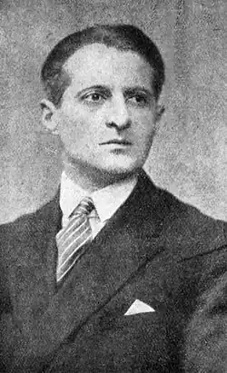
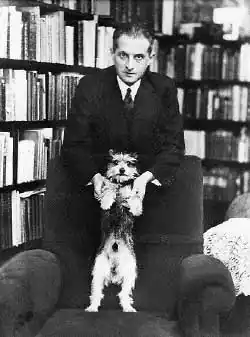
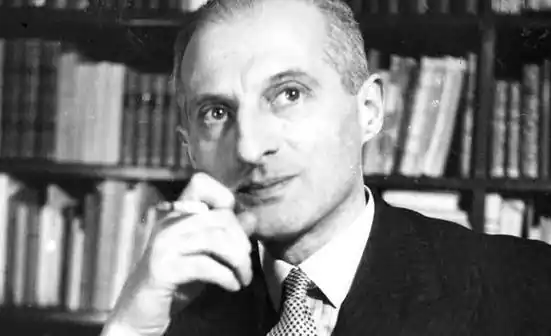

ТУВІМ, Юліан (Tuwim, Julian — 13.09.1894, Лодзь — 27.12.1953, Закопане) — польський поет.Його творче життя було вельми багатогранним. Навряд чи Тувім, витончений лірик і автор цікавих сатиричних творів, сподівався, що увійде до світової літератури насамперед як дитячий письменник. Сам він у дитинстві та юності не надто захоплювався поезією і мав надію пов'язати свою долю з набагато прозаїчнішими матеріями. Вирісши у промисловій Лодзі в родині банківського службовця, Тувім наполегливо опановував ази науки і навіть досяг певних успіхів у хімії. Перші поетичні спроби юнака могли б (як це часто трапляється) виявитися останніми, якби не вплив Л. Стаффа. Близькість світосприйняття дозволила Тувіму відчути "творчий заряд" поезії Стаффа, і це викликало своєрідну ланцюгову реакцію: у хлопця з'явилося бажання продовжити поетичні екзерсиси.
Приємно, що ранні вірші Тувіма є не наслідуванням, а своєрідним відгуком на творчість Стаффа. Втім Тувім і надалі ніколи не буде епігоном, хоча літературні уподобання (А. Рембо, В. Вітмен, В. Маяковський) у різній формі виявлятимуться у його віршах. Поряд із прагненням зберегти свою творчу індивідуальність, Тувіму притаманне шанобливе і зацікавлене ставлення до чужої поезії. Можливо, саме тому він доволі активно займався перекладами. Іноді вони досить несподівані: перша публікація Тувіма — переклад одного, з віршів Стаффа... мовою есперанто.
У 1916 p. Тувім вступив на юридичний факультет Варшавського університету, але незабаром перевівся на філологію. Цей вчинок багато що змінив у його житті. Передусім змінилося ставлення до мови, яке стало фахово зацікавленим. Це позначилося не лише на якості поезії — Тувім почав серйозно займатися історією мови. Зрештою, належно поцінувавши наукову вартість праць Т. ("Польські чари і чорти враз із хрестоматією чорнокнижництва", 1924, "Польський пияцький словник і вакхічна антологія", 1935, "Чотири століття польської фрашки", 1937), університет у Лодзі 1949 р. вшанував Тувіма званням доктора honoris causa. Крім того, під час навчання в університеті молодий поет знайшов однодумців. Навколо студентського журналу "Pro arte et studio" гуртувалися поети, які дещо пізніше склали літературну групу "Скамандр" (А. Слонімський, Я. Лєхонь, К. Вежинський, Я. Івашкевич). Група не мала єдиної естетичної програми, проте "скамандритів" об'єднувало спільне прагнення розвивати поезію на основі народної традиції і наблизити її до реального життя. Це прагнення виразно виявилося у "Весні" — поемі, яку Тувім надрукував у "Pro arte et studio". Критики накинулися на автора, звинувачуючи "Весну" в епатажності і блюзнірстві. Група професорів і студентів у відкритому листі засудила цей твір, звинувачуючи Т. у "крайньому реалізмі образів" і "порнографії". Завдяки цьому скандалу про Тувіма заговорили в літературних колах. Утім, критики багато в чому змінили свою думку, коли в 1918 p. Тувім видав першу книгу віршів "Читання на Бога" {"Czyh&nie na Boga"). Ліричний герой збірки доволі традиційний — це молода людина, яка вступає в доросле життя. У чомусь молодик дуже схожий на своїх ровесників: у міру серйозний і в міру легковажний, трохи нахабний і самовпевнений, нехтує досвідом старших, пориваючись продемонструвати власну індивідуальність. Але якимись невловними рисами він відрізняється від інших. Це людина, яку складно уявити частиною натовпу. Хоч-не-хоч юнак втягнутий у міську метушню (а герой Тувіма, безумовно, міщанин), але це втягнення суто формальне. Герой надто часто опиняється поза подіями, в позиції спостерігача. Це може здаватися дивним, адже цей молодик не просто відкритий, а радше навіть розчахнутий назустріч світові. Але в якусь мить власні емоції та переживання стають важливішими за те, що відбувається. Здається, що весь цей нудний світ, його марнотність з "гетсиманською печаллю шпитальних садів", маленькими трагедіями та безглуздими стражданнями перебувають по той бік скла, а герой — поцейбіч. Цей світ чужий і тісний для людини, яку переповнює радість життя. Поезія Тувіма щира. Саме тому і його оптимізм не виглядає вимученим або награним. Не здається він і бездумним. Подібне ставлення до світу — уповні усвідомлена позиція Тувіма, яка характеризує не лише героя першої, а й наступних книг поета. У житті цих героїв радісні моменти чергуються із сумними, а то й трагічними, але, незважаючи на це, вони не оздоблюються, не розчаровуються і не зраджують своїх ідеалів та молодості. Головні герої всіх збірок Тувіма настільки близькі у своєму розумінні світу, що можна, напевно, говорити про одного ліричного героя, який від книги до книги дорослішає, стає мудрішим, але це не вадить йому зберегти дивовижну свіжість сприйняття. Світ щоразу дивує його новими барвами, залишаючись загадковим і таємничим. У цьому герой близький самому Тувіму. Хоча В. Броневський назвав Тувіма "найяснішим" поетом, "дивні вірші" (починаючи з "Меланхолії тих, що стоять під мурами") траплятимуться в усіх його збірках: Місто має й смуток, і думки похмурі:Є там дивні люди, що стоять при мурі.Голови схилили, тихі, нерухомі, —Може, снять про чудо, може, з перевтоми.Сірі, наче сірість простору міського, Так, немов не бачать навкруги нікого.Втуплені безтямно погляди їх склисті...Ви їх не займайте: це святі у місті.Так, святі, з очима, повними одчаю, —Їм це невідомо, але я це знаю. ("Меланхолія...", пер. Г. Кочура)Герой Тувіма розуміє: перебуваючи у бурхливому потоці людей, підкоряючись загальним законам, можна "схопити" лише деталі, натомість зрозуміти ціле неможливо. Але для нього важливо відчути зв'язок між предметами і явищами, відчути і передати настрій, що "витає у повітрі". Тільки будучи "сторонньою людиною", він може побачити, як зовнішнє і внутрішнє переплітаються і навзаєм відображаються. Нудьга, що заповзає в порожні будинки; спека, що розжарює суху бруківку; марення, що кружляє у повітрі; клуби пилу, грюкіт бляшаних шильд і зблідлий від грізної звістки місяць — всі ці окремі штрихи створюють об'ємну картину світу. Світ цей зовні не надто привабливий. У ньому панують смерть і нудьга, з віком герой Тувіма відчуває це дедалі гостріше. До другої збірки Тувіма "Сократ танцює" ("Sokrates tanczacy"; 1920) увійшла поема "Петро Плаксін", у якій описані будні мешканців залізничної станції Нудьга Нудянська десь у Мордобийському повіті, де люди з сумовитими очима "банально страждають", що викликає "безвихідну гіркоту" в них самих і у всіх оточуючих. Є хмара, яка "сірою нудою сочиться", знаменуючи наближення смерті. Є й сама Смерть, яка з'являється у дивній подобі — водночас жалюгідній і грізній. Але, усвідомлюючи все це, герой зовсім не має наміру миритися з вульгарною буденщиною. Широко розправивши рамена, він донесхочу катається на трамваї; крокує "по весні, як по травах", ходить у розхристаному пальті, відчуваючи, як "пахне весною шаліючий сад". Весна не стільки пора року, скільки душевний стан самого героя, у якого "із серця краватка зелена росте, як галузка жива". Нудне життя, яке провадять інші люди, асоціюється у нього зі смертю, протистояння наближує його до безсмертя. "І в світі, сповненому смерті, єдиним живу коханням", — скаже про себе герой у "Сьомій осені" ("Siodma jesien", 1922). Кохання посилює його несхожість: воно скороминуще, не сльозливе, не нещасне, тобто не має нічого спільного з тими порожніми та неглибокими почуттями, прояви яких герой постійно спостерігає. Його кохання багатовимірне: у ньому і ніжність, і патетика, і смуток, і легка іронія. Воно дозволяє героєві побачити не лише світ, а й себе у дещо несподіваному світлі. Іронічне протистояння героя, бідного хлопця з Лодзі, смішного, неоковирного парубійка з неголеними щоками, і його антагоніста — чоловіка героїні, відомого поета у напрасованому костюмі, котрий, зручно вмостившись у кріслі, читає довжелезну статтю про власну геніальність (вірш "Твій чоловік і я"), нагнітається, загострюється і ...виявляється розіграшем. Бідний хлопець і відомий поет — один персонаж. "Четвертий том віршів" ("Wierszy torn czwarty"), що вийшов у світ через рік після "Сьомої осені", дозволяє побачити, як серйозне почуття змінило головного героя: він стає терпимішим, зауважує прояви яскравих, справжніх почуттів не тільки у себе, айв інших людей ("Флейтист"), серйозніше замислюється про майбутнє, про відповідальність, покладену на нього ("Наука"). Для Тувіма ж "Четвертий том" — своєрідне прощання з молодістю, з часами виступів у кабаре "Бі-ба-бо", "Чорний кіт", "Qui pro quo", літературному кафе "Під пікадором", коли до поета вперше прийшло літературне визнання. Автор і його герой вступають в пору зрілості. Але основа, життєві принципи залишаються незмінними: "Боже! Не роби мене монументом, ліпше створи мене прапором". У 1924 р. у варшавському театрі "Нова комедія" відбулася прем'єра тувімівської інсценізації "Шинелі" М. Гоголя, а невдовзі вийшла і нова книга віршів — "Словом — до крові" ("Slowa we krwi", 1926), за нею — "Чорнолісся" ("Rzecz czamoleska", 1929), "Циганська біблія" ("Bibliacyganska...", 1933), "Палаюча сутність" ("Tresc gorejca", 1936). Ці книги — насамперед роздуми про поезію, про "видобування слів" і можливості мови. їхній головний герой — "ловчий", його "промисел — слово". Слово для нього — щось відчутне на дотик, матеріальне, наділене плоттю, і він ладен "пробавлятись словами, неначе плодами". За всієї поваги до "урочого листя словників" поет переконаний у тому, що знайти слово яскраве та містке можна лише в густому саду, що гримить солов'ями, або біля лісового багаття, іскри якого нагадують "жвавих жуків", або "в житті; яке пахне війною": У шерензі біля домуХрестики, в снігу брудному.В траурі Варшава-мати,Вчись по-польськи розмовляти.З вихором кружля сніжниця,А з вампіром — упириця,Чути вереск упиряти — Будеш знати? Буду знати.("Урок", пер. Д. Павличка)У вересні 1939 p., коли почалася Друга світова війна, Тувім був змушений емігрувати. Протягом семи років поет поневірявся на чужині: Париж, Португалія, Ріо-де-Жанейро, Нью-Йорк — таким був маршрут його мандрів. У ці роки були створені поема "Квіти польські", численні антифашистські вірші. Діяльність Тувіма після війни була дуже різноманітною: він захоплювався театром, працював у Театрі Війська Польського, Варшавському Но-вому театрі, провадив рубрику сатиричних курйозів у журналі "Проблеми", видав антологію "Польська фантастична новела" (1949), активно займався перекладами.